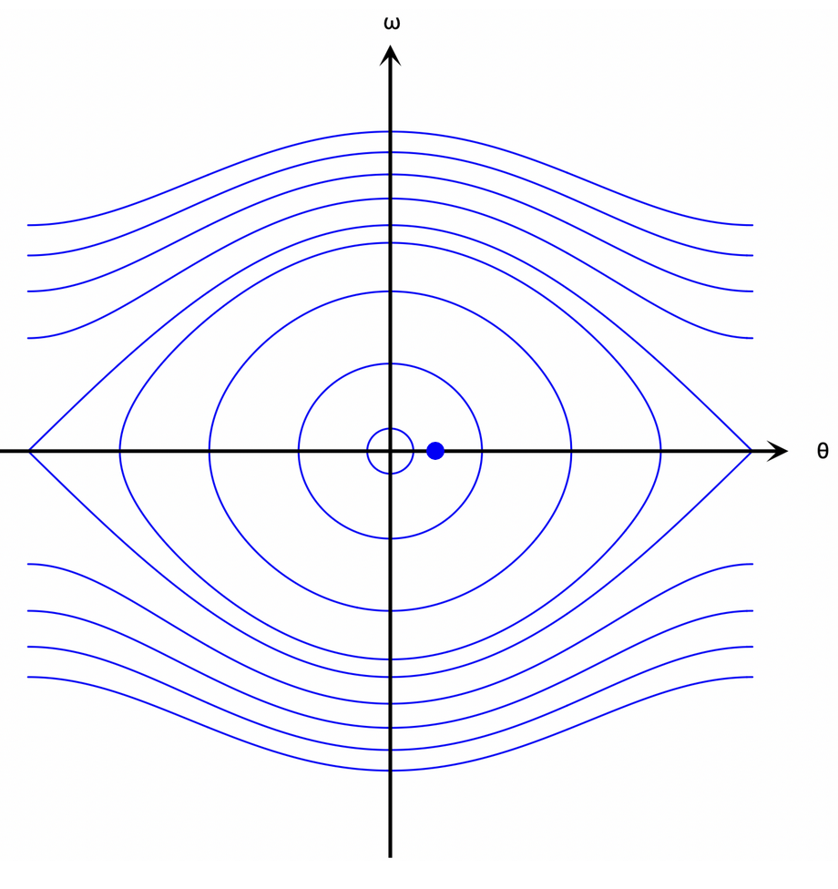

A Crash Course on Classical Lagrangian and Hamiltonian Mechanics
In undergraduate physics, you mostly stay in the realm of Netwonian physics, and may briefly touch on Lagrangian and Hamiltonian mechanics. You study these more in depth in graduate school, but I quite haven't had the time to go to grad school for physics yet, so this will have to be good enough...Newtonian Mechanics
The general process for Newtonian mechanics is to:- Describe all forces acting on an object.
- Use \(\vec{F}=m\vec{a}\) to describe the acceleration, and by extension the velocity and position of the object over time.
Lagrangian Mechanics
The general process for Lagrangian mechanics is to:
- Describe all energies corresponding to an object as the Lagrangian: \[L=K-U\] where \(K\) is kinetic energy and \(U\) is potential energy.
- Use the Euler-Lagrange equation to obtain the equation of motion: \[\frac{d}{dt}\frac{\partial L}{\partial \dot{q}} = \frac{\partial L}{\partial q}\] where \(q\) is a singular coordinate (for example the position of a particle along the \(x\) axis, or the angle a pendulum makes with the vertical).
Also say that \(y=0\) is at the height of the pivot and anything below it is in the negative direction. We can determine the Lagrangian by doing: \[ \begin{align} K &= \frac{1}{2}m\vec{v^2} = \frac{1}{2}m\dot{s}^2 \\ &= \frac{1}{2}ml^2\dot{\theta}^2 \\ U &= -mglcos\theta \\ L &= \frac{1}{2}ml^2\dot{\theta}^2 + mgl\cdot cos\theta \end{align} \] Then the Euler-Lagrange equation for this particular situation is: \[ \begin{align} ml^2\ddot\theta = -mgl\cdot sin\theta \end{align} \] which, with a little rearranging, will recover the same equation of motion that we obtained before: \[ \begin{align} ml^2\ddot\theta &= -mglsin\theta \\ l\ddot\theta &= -gsin\theta \\ \ddot\theta &= -\frac{g}{l}sin\theta \end{align} \] Note that the Euler-Lagrange equation mirrors the Newtonian \(\vec{F}=m\vec{a}\): Generally, if \(L = \frac{1}{2} m \dot{q^2} - U(q)\), then \(\frac{\partial L}{\partial {q}} = -\frac{\partial U}{\partial q} = \vec{F}\). Furthermore, \(\frac{\partial L}{\partial \dot{q}} = m\dot{q}, \frac{d}{dt}\frac{\partial L}{\partial \dot{q}} = m\ddot{q} = m\vec{a}\), so we end up with \(\vec{F}=m\vec{a}\) again. The Euler-Lagrange equation simply generalizes this relationship so that it applies to any coordinate system.
\(\frac{\partial L}{\partial {q}} = \vec{F} = m\ddot{q} = \dot p\) is the generalized force corresponding to coordinate \(q\).
I talk about things I don't fully understand
Lagrangian mechanics is based on the "principle of stationary action".
Say that a system has a coordinate \(q\) that changes with time.
Each section of the path that \(q\) traverses has an associated energy, and the system spends some amount of time in that section.
An action is defined then as:
\[S(q(t)) = \int L(q, \dot q, t) dt\]
(With units of \(\text{energy}\cdot\text{time}\)... The same as Planck's constant \(h\) and \(\hbar\)...)
In other words, for each path of coordinate \(q\) over time \(t\), there is an associated action \(S\) which describes how "costly" that path is, in terms of energy and time.
This principle says that a system will choose a path where, even if the path varies slightly, the action does not change.
So, the paths chosen have actions that are on extrema-- minimums, maximums, or saddle points-- of the action function.
Applying this concept to our above equation for \(S(q(t))\) is what yields the Euler-Lagrange equation.
Hamiltonian Mechanics
The general process for Hamiltonian mechanics is to:-
Describe all energies corresponding to an object as the Hamiltonian:
\[H=p\dot{q}-L\]
where \(p\) is momentum and \(L\) is the Lagrangian.
(Also, occasionally this will look like \(H=K+U\), or the total energy of the system!) - From \(p = \frac{\partial L}{\partial \dot{q}}\), you can write \(\dot{q}\) in terms of p, then plug this into the Hamiltonian-- you want the Hamiltonian to be in terms of variables \(p\) and \(\theta\).
- Use Hamilton's equations/canonical equations of motion to obtain the equations of motion: \[ \begin{align} \dot q &= \frac{\partial H}{\partial p} \\ \dot p &= -\frac{\partial H}{\partial q} \end{align} \]
Example continued. For our pendulum, \(\frac{\partial L}{\partial \dot{q}} = p = ml^2\dot\theta\) which means that \(\dot\theta = \frac{p}{ml^2}\). Thus the Hamiltonian is: \[\begin{align} H &= \frac{p^2}{ml^2} - \frac{1}{2}ml^2\dot{\theta}^2 - mgl\cdot cos\theta \\ &= \frac{p^2}{ml^2} - \frac{1}{2}ml^2\dot{\frac{p}{ml^2}}^2 - mgl\cdot cos\theta \\ &= \frac{p^2}{ml^2} - \frac{1}{2}\dot{\frac{p^2}{ml}} - mgl\cdot cos\theta \\ &= \frac{p^2}{2ml^2} - mgl\cdot cos\theta \\ \end{align}\] and the resulting Hamilton equations are: \[ \begin{align} \dot\theta &= \frac{\partial H}{\partial p} = \frac{p}{ml^2} \\ \dot p &= -\frac{\partial H}{\partial \theta} = -mgl\cdot sin\theta \end{align} \] From the first equation we can get an alternative expression for \(\dot p\), and then set this equal to the second equation: \[ \begin{align} \dot\theta &= \frac{\partial H}{\partial p} = \frac{p}{ml^2} \\ \ddot\theta &= \frac{\dot p}{ml^2} \\ \dot p &= ml^2\ddot\theta = -mgl\cdot sin\theta \\ l\ddot\theta &= -g\cdot sin\theta \\ \ddot\theta &= -\frac{g}{l}\cdot sin\theta \end{align} \]
I talk about things I don't fully understand again
Hamiltonian mechanics comes from the same principle of stationary action, though I'm not sure of the math behind it yet... The Legendre Transform obtains the Hamiltonian from the Lagrangian, is all I know.Hamiltonian mechanics also has the concept of "phase space": a two-dimensional space with the axes defining momentum \(p\) and a coordinate \(q\).
A "flow" on this phase space is a path taken through this space. The energy at any point on a specific flow on a phase space is constant. For example, these are some of the possible flows on a phase space for our pendulum example:  Notice that the lines that do not connect in a complete loop are cases where the starting momentum is so high that the pendulum flips straight over its pivot and comes around on the other side!
Poisson Brackets
-
Antisymmetric: \(\{f,g\}=-\{g,f\}\)
so, \(\{f,f\}=0\) - Linear: \(\{af+bg,h\}=a\{f,h\}+b\{g,h\}\)
- \(\{f,\{g,h\}\} + \{g,\{h,f\}\} + \{h,\{f,g\}\} = 0\)
- \(\{fg,h\} = f\{g,h\} + g\{f,h\}\)
- \(\{q_i,q_j\}, \{p_i,p_j\}=0\)
- \(\{q_i,p_j\}=\delta_{ij}\)
Since (at least in this course) we always pick generalized coordinate \(q\) so that the Hamiltonian represents total energy, we're working in canonical coordinates, so all our Poisson Brackets are canonical...
Obtaining the Poisson Bracket.
In general, the first order Taylor Expansion tells is that
\[
\frac{df(x)}{dx}=g(x) \longleftrightarrow f(x+dx) = f(x)+dxg(x)+o(dx^2)
\]
Say that we have coordinate \(q\) and momentum \(p\), which change over an infinitesimally small time interval \(dt\) according to functions \(q(t)\) and \(p(t)\):
\[\begin{align}
\begin{cases}
q=q(t) \mapsto q' =q(t+dt) \\
p=p(t) \mapsto p' =p(t+dt)
\end{cases}
\end{align}\]
then we can write \(q(t+dt)\) and \(p(t+dt)\), for example:
\[\begin{align}
f(x+dx) &= f(x)+dxg(x)+o(dx^2) \\
q(t+dt) &= q(t)+dt\frac{dq(t)}{dt} + o(dt^2) \\
&= q(t)+dt\dot q + o(dt^2) \\
&= q(t)+dt\frac{\partial H}{\partial p} + o(dt^2) \\
\end{align}\]
(using Hamilton's equations of motion for the last step), which allows to say
\[\begin{align}
\begin{cases}
q \mapsto q' = q + dt\frac{\partial H}{\partial p} + o(dt^2) \\
p \mapsto p' = p - dt\frac{\partial H}{\partial q} + o(dt^2)
\end{cases}
\end{align}\]
Say that we have some other function of \(q\) and \(p\), \(A\).
Over time, \(A(q,p)\mapsto A(q',p') = A(q+dt\frac{\partial H}{\partial p}, p-dt\frac{\partial H}{\partial q})\).
We can use the same expansion as before:
\[\begin{align}
A(q',p') &= A(q(t+dt), p(t+dt)) = A(q(t),p(t))+dt\frac{dA}{dt} + o(dt^2)
\end{align}\]
We use the same concept as before; since \(A\) is a function of \(q\) and \(p\), we can say that
\[\begin{align}
dA &= \frac{\partial A}{\partial q}dq+\frac{\partial A}{\partial p}dp \\
\frac{dA}{dt} &= \frac{\partial A}{\partial q}\frac{dq}{dt}+\frac{\partial A}{\partial p}\frac{dp}{dt} \\
&= \frac{\partial A}{\partial q}\dot q+\frac{\partial A}{\partial p}\dot p \\
&= \frac{\partial A}{\partial q}\frac{\partial H}{\partial p}-\frac{\partial A}{\partial p}\frac{\partial H}{\partial q}
\end{align}\]
or, when taking the arguments into account:
\[\begin{align}
\frac{dA}{dt} &= \frac{\partial A}{\partial q}(q, p-dt\frac{\partial H}{\partial q})\frac{\partial H}{\partial P}-\frac{\partial H}{\partial q}\frac{\partial A}{\partial p}(q+dt\frac{\partial H}{\partial p},p)
\end{align}\]
However, if we only care about the orders lower than \(dt^2\),
\[\frac{\partial A}{\partial q}\frac{\partial H}{\partial p}-\frac{\partial A}{\partial p}\frac{\partial H}{\partial q}\]
is just fine.
Then, we have:
\[\begin{align}
A(q',p') &= A(q(t),p(t))+dt\frac{dA}{dt} + o(dt^2) \\
&= A(q,p)+dt(\frac{\partial A}{\partial q}\frac{\partial H}{\partial p}-\frac{\partial A}{\partial p}\frac{\partial H}{\partial q}) + o(dt^2) \\
&\approx A(q,p)+dt(\frac{\partial A}{\partial q}\frac{\partial H}{\partial p}-\frac{\partial A}{\partial p}\frac{\partial H}{\partial q})
\end{align}\]
Note how this is in the form \(f(x)+dxg(x)+o(dx^2)\).
In our case, the "\(g(x)\)" is really \(\frac{\partial A}{\partial q}\frac{\partial H}{\partial p}-\frac{\partial A}{\partial p}\frac{\partial H}{\partial q}\), which, as it turns out, is the Poisson bracket (in one degree of freedom):
\[
\frac{\partial A}{\partial q}\frac{\partial H}{\partial p}-\frac{\partial A}{\partial p}\frac{\partial H}{\partial q} = \{A,H\}_{P.B.}
\]
Thus we can say that (in this case) the Poisson bracket is the change in some state described by \(A(q(t),p(t))\), over a small unit of time, according to some generating function \(H\).
Implications of the canonical Poisson Bracket.
We can now define a canonical transformation.
Take our transformation
\[\begin{align}
\begin{cases}
q \mapsto q' = q + dt\frac{\partial H}{\partial p} + o(dt^2) \\
p \mapsto p' = p - dt\frac{\partial H}{\partial q} + o(dt^2)
\end{cases}
\end{align}\]
Clearly, \(\{q,p\}\) is a canonical Poisson bracket:
\[\begin{align}
\{q_j,p_j\}
&= \sum^n_{i=1}(\frac{\partial q_j}{\partial q_i}\frac{\partial p_j}{\partial p_i}-\frac{\partial q_j}{\partial p_i}\frac{\partial p_j}{\partial q_i}) \\
&= \frac{\partial q_j}{\partial q_j}\frac{\partial p_j}{\partial p_j}-0 = 1 \\
\{q_j,p_k\}
&= \sum^1_{i=1}(\frac{\partial q_j}{\partial q_i}\frac{\partial p_k}{\partial p_i}-\frac{\partial q_j}{\partial p_i}\frac{\partial p_k}{\partial q_i}) \\
&= 0 \\
\{q_j,q_k\}
&= \sum^n_{i=1}(\frac{\partial q_j}{\partial q_i}
\frac{\partial q_k}{\partial p_i}
-\frac{\partial q_j}{\partial p_i}
\frac{\partial q_k}{\partial q_i}) \\
&= 0
\end{align}\]
After transformation over some small \(dt\), \(\{q,p\}\) becomes \(\{q',p'\}\).
Is \(\{q',p'\}\) still a canonical Poisson bracket?
Using the first order Taylor expansion:
\[\begin{align}
\{q',p'\} &= \{q+dt\partial_p H + o(dt^2), p-dt\partial_qH + o(dt^2)\} \\
&= \{q,p\} + dt(\{\partial_pH,p\}-\{q,\partial_qH\}) + o(dt^2) \\
&= \{q,p\} + dt(\frac{\partial^2H}{\partial q\partial p}\frac{\partial p}{\partial p}-\frac{\partial^2H}{\partial p^2}\frac{\partial p}{\partial q} \\
&- \frac{\partial^2H}{\partial p\partial q}\frac{\partial q}{\partial q}-\frac{\partial^2H}{\partial q^2}\frac{\partial q}{\partial p}) + o(dt^2) \\
&= \{q,p\} + dt(\frac{\partial^2H}{\partial q\partial p}\cdot1-0 - \frac{\partial^2H}{\partial p\partial q}\cdot1-0) + o(dt^2) \\
&= \{q,p\} + dt(0) + o(dt^2) \\
&\approx \{q,p\}
\end{align}\]
(Note that in order to say that \(\frac{\partial^2H}{\partial q\partial p} - \frac{\partial^2H}{\partial p\partial q} =0\), we assume \(H\) is continuous).
This means that the transformation that takes place over infinitesimally small spans of time, or as we call it, "infinitesimal time translation" or "Hamiltonian flow" preserves the canonical Poisson Bracket.
Not only that, but this transformation preserves the canonical equations of motion.
For every infinitesimal time translation:
\[\begin{align}
\begin{cases}
q \to Q(q,p) \\
p \to P(q,p)
\end{cases}
\end{align}\]
we know that \(\{Q, P\}=\{q,p\}\), and since \(\{q,p\}\) is a canonical Poisson bracket, \(\{Q, P\}\) is a canonical Poisson bracket as well:
\[
\{Q_i,P_j\} = \{q_i,p_j\} = \delta_{ij}, \{Q_i,Q_j\}=\{P_i,P_j\}=0
\]
We can also define a new Hamiltonian (let's call it \(K\)) for this particular set of coordinates by writing the original \(q\) and \(p\) in terms of \(Q\) and \(P\):
\[
K(Q,P) = H(q(Q,P), p(Q,P)) \mid \dot Q_i = \partial_{P_i}K, \dot P_i = -\partial_{Q_i}K
\]
Canonical Transformations
Now we know that a canonical transformation is a change of variables \(q,p\) in phase space so that the canonical equations of motion still hold: \[\begin{align} (q, p) &\mapsto (q', p') \\ \dot q &= \frac{\partial H}{\partial p}, \dot p = -\frac{\partial H}{\partial q} \\ \dot q' &= \frac{\partial H'}{\partial p'}, \dot p' = -\frac{\partial H'}{\partial q'} \end{align}\] and a canonical transformation must preserve canonical Poisson brackets, meaning that \[ \{q_i, q_j\}=0, \{p_i, p_j\}=0, \{q_i, p_j\}=\delta_{ij} \] So far we have worked closely with our infinitesimal time translations. We can really generalize to some function \(G\), not specifically \(H\), and over any \(d\alpha\), not just specifically \(dt\). (As long as \(\partial_pG=\dot q, -\partial_qG=\dot p\), of course)
Invariance under transformations.
Now, our \(A(q,p)\to A(q',p')\) becomes:
\[\begin{align}
A(q',p') &= A(q+d\alpha(\frac{\partial G}{\partial p}), p-d\alpha\frac{\partial G}{\partial q}) \\
&= A(q,p) + d\alpha (\frac{\partial A}{\partial q}\frac{\partial G}{\partial p}-\frac{\partial A}{\partial p}\frac{\partial G}{\partial q}) \\
&= A(q,p) + d\alpha \{A,G\}_{P.B.} \\
\frac{dA}{d\alpha} &= \{A,G\}_{P.B.}
\end{align}\]
where the last line comes from the first order Taylor expansion.
If, in the case of the infinitesimal time translation, our generator \(G\) is \(H\), and if \(\frac{dA}{d\alpha} = \{A,H\}_{P.B.} = 0\), then we know that \(A\) is conserved under the time translations, or that \(A\) is time invariant.
We can even reverse this relationship and use \(A\) as an infinitesimal generator to get that \(\frac{dH}{d\alpha}=\{H, A\}_{P.B.}\), which is 0 if \(\{A,H\}_{P.B.} = 0\), in which case we say the Hamiltonian is invariant under transformation generated by \(A\) over some \(d\alpha\).
Examples of Canonical Transformations
Space translations. A translation in space is, intuitively \[\begin{cases} q\mapsto q+dq \\ p\mapsto p \end{cases}\] We know that this is canonical if it follows \[\begin{cases} q \mapsto q' = q + d\alpha \frac{\partial G(q,p)}{\partial p} \\ p \mapsto p' = p - d\alpha \frac{\partial G(q,p)}{\partial q} \end{cases}\] which it does, if \(G=p\) and \(d\alpha=dq\). Thus we can say that an infinitesimal space translation is canonical and \(p\) is the infinitesimal generator of space translations.Momentum boosts (translations). A change in momentum is, intuitively \[\begin{cases} q\mapsto q \\ p\mapsto p+dp \end{cases}\] We know that this is canonical if it follows \[\begin{cases} q \mapsto q' = q + d\alpha \frac{\partial G(q,p)}{\partial p} \\ p \mapsto p' = p - d\alpha \frac{\partial G(q,p)}{\partial q} \end{cases}\] which it does, if \(G=-q\) and \(d\alpha=dp\). Thus we can say that an infinitesimal momentum boost is canonical and \(-q\) is the infinitesimal generator of space translations. Note the difference in sign from the space translation; this is a result of a change in reference frame.
Rotation. This is slightly tricky; we can't work in one dimension anymore, and we have to work out what a rotation actually looks like. For an arbitrary vector \(\vec{v}\) that we rotate by an angle of \(\theta\) around an axis \(\hat{n}\):
If we only consider the plane with normal \(\hat{n}\) (right), we see that the portion of the new vector in this plane, \(\vec{v'}\), rotates by angle \(\theta\): \[\begin{align} \hat{R}_\hat{n}(\theta)\vec{v} &= \hat{R}_\hat{n}(\theta)\vec{v_\parallel} + \hat{R}_\hat{n}(\theta)\vec{v_\perp} \\ &= \vec{v_\parallel} + \hat{R}_\hat{n}(\theta)\vec{v_\perp} \end{align}\] but we still have yet to determine what \(\hat{R}_\hat{n}(\theta)\vec{v_\perp}\) is. We know that its length is still the same as \(\vec{v_\perp}\), and that it can be broken down into two orthogonal components, one along \(\vec{v_\perp}\) and the other along \(\vec{v'_\perp}\). \[\begin{align} \vec{v_\parallel} + \hat{R}_\hat{n}(\theta)\vec{v_\perp} &= \vec{v_\parallel} + |\vec{v}_\perp|\cos\theta\cdot\hat{v}_\perp + |\vec{v}_\perp|\sin\theta\cdot\hat{v'}_\perp \\ &= \vec{v}_\parallel + |\vec{v}_\perp|\cos\theta\cdot\hat{v}_\perp + |\vec{v}_\perp|\sin\theta\cdot\hat{n}\times\hat{v}_\perp \\ &= \vec{v}_\parallel + \cos\theta\cdot\vec{v}_\perp + \sin\theta\cdot\vec{v'}_\perp \\ \end{align}\] Given that \(\vec{v}_\perp = \vec{v} - \vec{v}_\parallel\), \(\vec{v}_\parallel = \hat{n}(\hat{n}\cdot\vec{v})\), and \[\vec{v'}_\perp = \hat{n}\times\vec{v}-\hat{n}\times\hat{n}(\hat{n}\cdot\vec{v}) = \hat{n}\times\vec{v}-0(\hat{n}\cdot\vec{v}) = \hat{n}\times\vec{v}\] we can finally come to the solution: \[\begin{align} \hat{R}_\hat{n}(\theta)\vec{v} &= \hat{n}(\hat{n}\cdot\vec{v}) + \cos\theta (\vec{v} - \hat{n}(\hat{n}\cdot\vec{v})) + \sin\theta\cdot(\hat{n}\times\vec{v}) \\ &= \hat{n}(\hat{n}\cdot\vec{v})(1-\cos\theta) + \cos\theta\cdot\vec{v}+\sin\theta\cdot(\hat{n}\times\vec{v}) \\ &= \hat{n}(\hat{n}\cdot\vec{v})(1-1) + 1\cdot\vec{v}+d\theta\cdot(\hat{n}\times\vec{v}) \\ &= \vec{v}+d\theta\cdot(\hat{n}\times\vec{v}) + o(d\theta^2) \end{align}\] (using the small angle approximation on the last steps) so that we have the result in terms of the original vector \(\vec{v}\). Since we are in multiple dimensions, we use \(\vec{r}\) and \(\vec{p}\) instead of \(q\) and \(p\), where \(\vec{r}=(q_x, q_y, q_z)\) and \(\vec{p}=(p_x, p_y, p_z)\). Our rotation will affect both the position \(\vec{r}\) and the total momentum \(\vec{p}\), so we have \[\begin{align} \hat{R}_\hat{n}(\theta)\vec{r} &= \vec{r}+d\theta(\hat{n}\times\vec{r}) \\ \hat{R}_\hat{n}(\theta)\vec{p} &= \vec{p}+d\theta(\hat{n}\times\vec{p}) \end{align}\] If this is canonical, it must satisfy the form: \[\begin{cases} \vec{r} \mapsto \vec{r} + d\theta\vec{\nabla}_pG(\vec{r},\vec{p}) \\ \vec{p} \mapsto \vec{p} + d\theta\vec{\nabla}_rG(\vec{r},\vec{p}) \end{cases}\] for some \(G\). Does this \(G\) exist?
We want \(d\theta\vec{\nabla}_pG(\vec{r},\vec{p}) = \hat{n}\times\vec r\). Since any \(\vec\nabla_\vec{r}=\vec{a}\) means that \(f\) is linear in \(\vec r\) by \(\vec a\) (we're working in multiple dimensions now, hence the \(\vec a\) instead of just \(a\)!), we know that \(G\) is linear in \(\hat n \times \vec r\) by \(\vec p\), or that \(G=(\hat{n}\times\vec r)\cdot\vec p\).
So, we can say that rotation is canonical and \(G=(\hat{n}\times\vec r)\cdot\vec p=\hat{n}\cdot(\vec{r}\times \vec p)\) is the infinitesimal generator of rotations. We give \(\vec r\times\vec p\) a fancy name: \[\vec r\times\vec p =\vec L\] where \(\vec L\) is orbital angular momentum, so \(G = \hat{n}\cdot\vec L\).
To go a step further, we know that \(\frac{dA}{d\theta}=\{A, \hat{n}\cdot\vec L\}\). If \(\frac{dA}{d\theta}=0\), then for any vector, \(A\) is invariant upon rotation, and \(\{A, \vec L\}=0\). If, instead, \(\frac{dA}{d\theta}=\hat{n}\times \vec{A}=\{A, \hat{n}\cdot\vec L\}\), then via the definition of the cross product, \[\begin{align} \{A_i, n_j\vec L_j\} = \sum_{jk} \epsilon_{ijk}n_jA_k \\ \{A_i, \vec L_j\} = \sum_{k} \epsilon_{ijk}A_k \\ \end{align}\] and if \(\vec{A}=\vec{L}, \{\vec L_i, \vec L_j\}=\sum_k\epsilon_{ijk}\vec{L_k}\).